Exploded Views
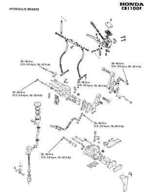
Honda CB1100F
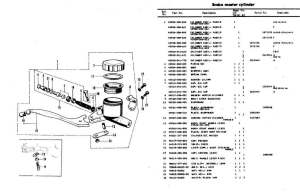 Honda Early CB750 Master |
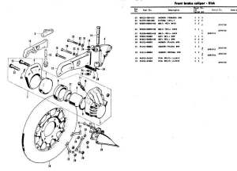 Honda Early CB750 Caliper |
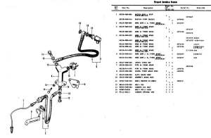 Honda Early CB750 Hoses |
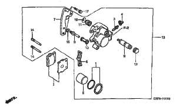 Honda CR85 Front Caliper |
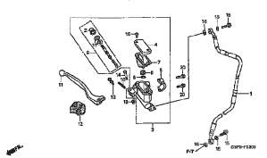 Honda CR85 Front Master |
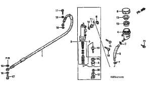 Honda CR85 Rear Master |
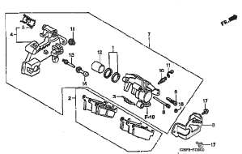 Honda CR85 Rear Caliper |
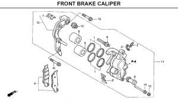 Honda CRF250X Front Caliper |
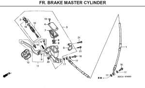 Honda CRF250X Front Master |
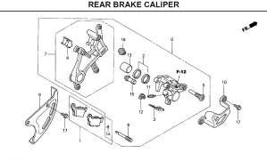 Honda CRF250 Rear Caliper |
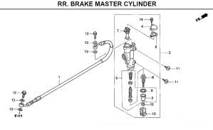 Honda CRF250X Rear Master |
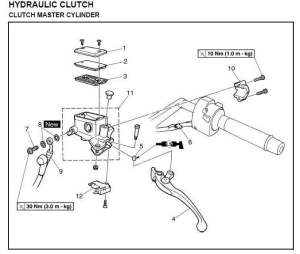 Yamaha FJR1300 Clutch Master |
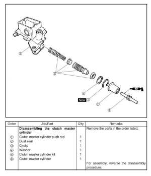 Yamaha FJR1300 Clutch Master 2 |
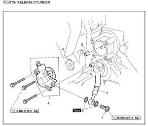 Yamaha FJR1300 Clutch Slave |
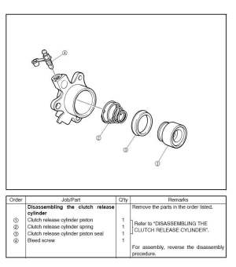 Yamaha FJR1300 Clutch Slave2 |
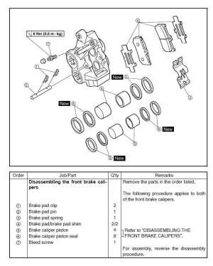 Yamaha FJR1300 Front Caliper |
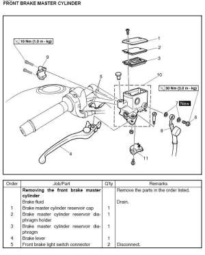 Yamaha FJR1300 Master |
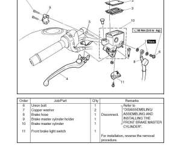 Yamaha FJR1300 Front Master 2 |
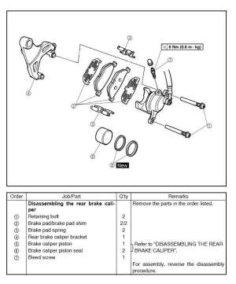 Yamaha FJR1300 Rear Caliper |
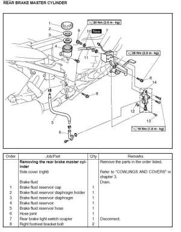 Yamaha FJR1300 Rear Master |
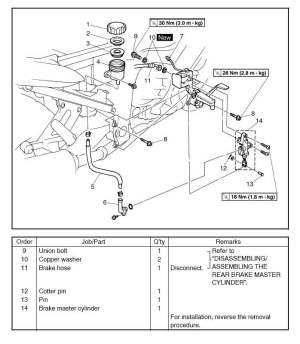 Yamaha FJR1300 Rear Master 2 |
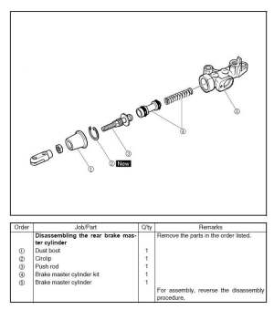 Yamaha FJR1300 Rear Master 3 |
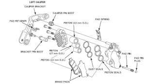 Honda GL1800 Front Left Caliper |
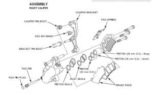 Honda GI1800 Front Right Caliper |
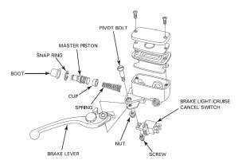 Honda GL1800 Front Master |
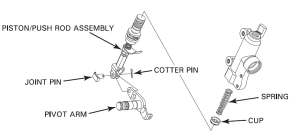 Honda GL1800 Rear Master |
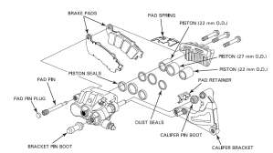 Honda GL1800 Rear Caliper |
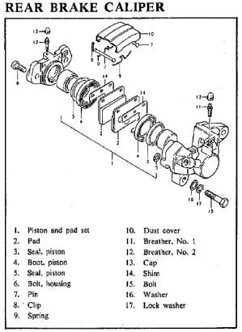 Suzuki GS1000 Rear Caliper |
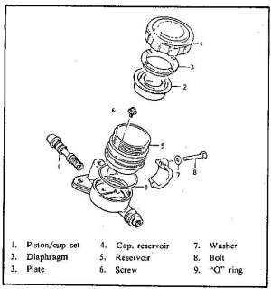 Suzuki GS1000 Front Master |
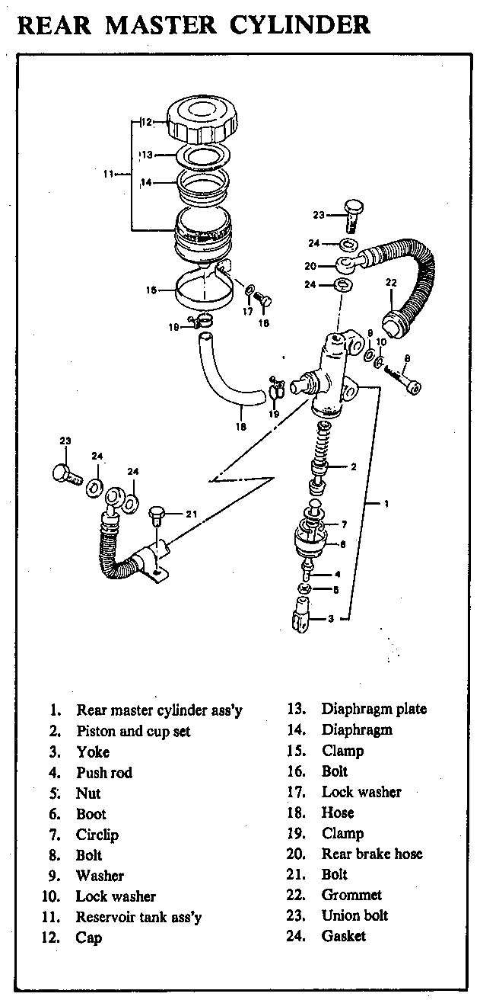 Suzuki GS1000 Rear Master |
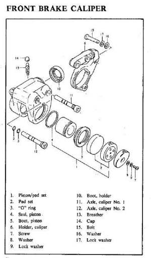 Suzuki GS1000 Front Caliper |
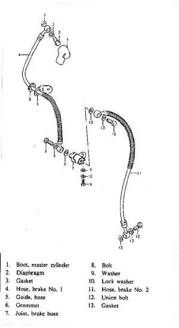 Suzuki GS1000 Lines |
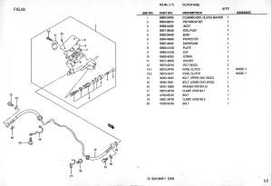 Suzuki GSX1300R Clutch Front Master |
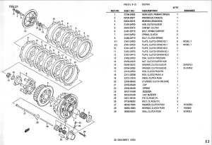 Suzuki GSX1300R Clutch Front Slave |
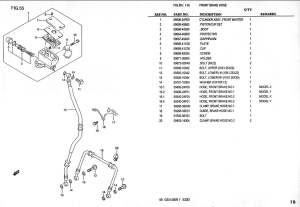 Suzuki GSX1300R Front Master |
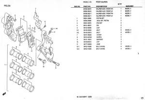 Suzuki GSX1300R Front Caliper |
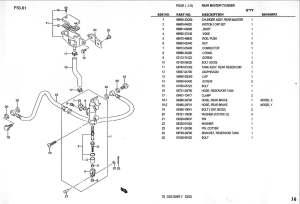 Suzuki GSX1300R Rear Master |
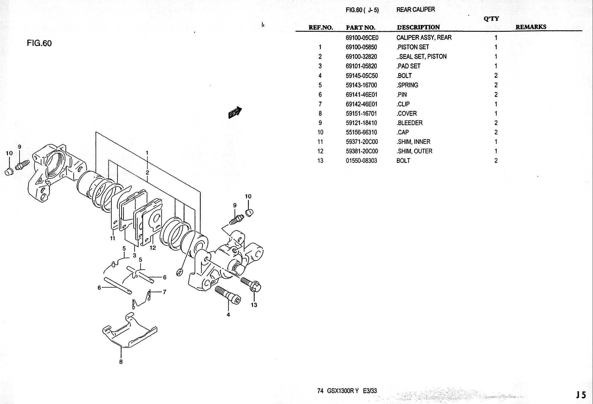 Suzuki GSX1300R Rear Caliper |
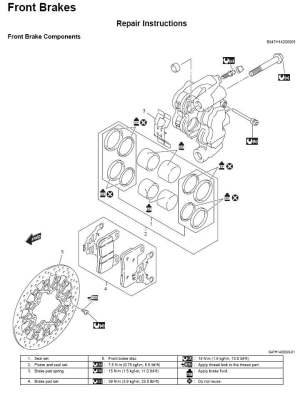 Suzuki GSXR1000 Front Caliper |
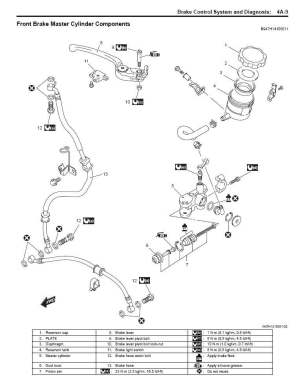 Suzuki GSXR1000 Front Master |
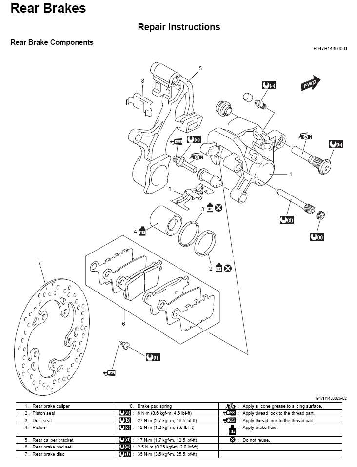 Suzuki GSXR1000 Rear Caliper |
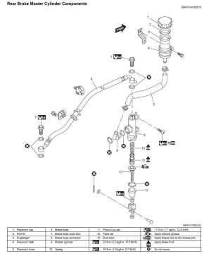 Suzuki GSXR1000 Rear Master |
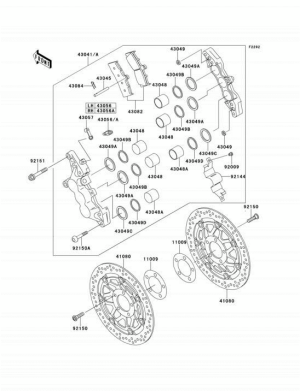 Kawasaki ZX12R Front Caliper |
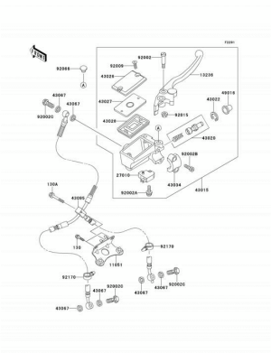 Kawasaki ZX12R Front Master |
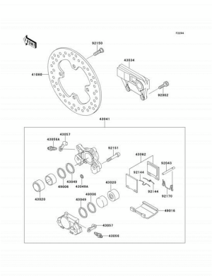 Kawasaki ZX12R Rear Caliper |
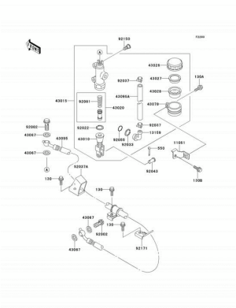 Kawasaki ZX12R Rear Master |
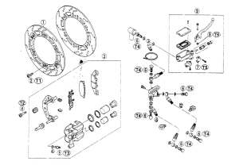 Kawasaki GPX750R Front |
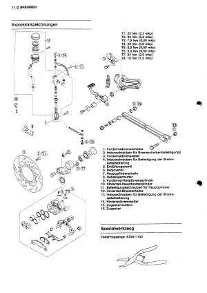 Kawasaki GPX750R Rear |
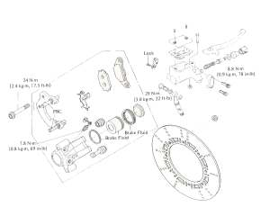 Kawasaki KLR600 Front |
Kawasaki KZ550 Front Caliper |
Kawasaki ZZR1100 Front Caliper |
Kawasaki ZZR1100 Front Master |
Kawasaki ZZR1100 Rear Caliper |
Kawasaki ZZR1100 Rear Master |
Suzuki GS500E Front Caliper |
Suzuki GS500E Front Master |
Suzuki GS500E Rear Caliper |
Suzuki GS500E Rear Master |
Triumph Rocket 3 Front Caliper |
Triumph Rocket 3 Front master |
Triumph Rocket 3 Rear Caliper not servicable Must be replaced as a Unit |
Triumph Rocket 3 Rear Master |
Yamaha WR250F Front Caliper |
Yamaha WR250F Front Master |
Yamaha WR250F Rear Caliper |
Yamaha WR250F Rear Master |

Copyright © 1999-2014 dansmc.com. All rights reserved.